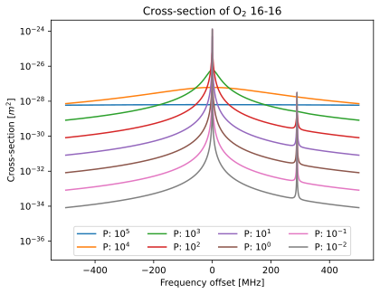

Absorption by a single species
"""Absorption by a single species"""
import matplotlib.pyplot as plt
import numpy as np
import pyarts3 as pyarts
# Download catalogs
pyarts.data.download()
# %% Select absorption species
species = "O2-66" # Main isotope of O2
# %% Activate the recipe for this species
#
# See [SingleSpeciesAbsorption](pyarts3.recipe.rst#pyarts3.recipe.SingleSpeciesAbsorption).
absorption = pyarts.recipe.SingleSpeciesAbsorption(species=species)
# %% Select a single temperature, a VMR value, and a range of pressures
atm = pyarts.arts.AtmPoint()
atm.set_species_vmr("O2", 0.2095)
atm.temperature = 273
ps = np.logspace(5, -2, 8)
# %% Select frequency range
line_f0 = 118750348044.712 # Lowest energy absorption line
f = np.linspace(-500e6, 500e6, 1001) + line_f0 # Some range around it
# %% Use the recipe and convert the results to cross-sections
xsec = []
for p in ps:
atm.pressure = p
xsec.append(absorption(f, atm) / atm.number_density(species))
xsec = np.array(xsec)
# %% Plot the results
fig, ax = plt.subplots()
ax.semilogy((f - line_f0) / 1e6, xsec.T)
ax.set_xlabel("Frequency offset [MHz]")
ax.set_ylabel("Cross-section [$m^2$]")
ax.set_title("Cross-section of O$_2$ 16-16")
ax.set_ylim(ymin=1e-3 * np.min(xsec))
ax.legend(
[f"P: $10^{'{'}{round(np.log10(x))}{'}'}$" for x in ps],
ncols=4,
loc="lower center",
)
# %% Integration test by ensuring some statistics look good
assert np.isclose(6.792977548868407e-28 / xsec.mean(), 1)
assert np.isclose(5.43981642113382e-24 / xsec.sum(), 1)
assert np.isclose(1.3359834491781882e-24 / xsec.max(), 1)
assert np.isclose(2.537911691540087e-26 / xsec.std(), 1)
assert np.isclose(8.236637542411964e-35 / xsec.min(), 1)
(Source code, svg, pdf)
{kind=link}
